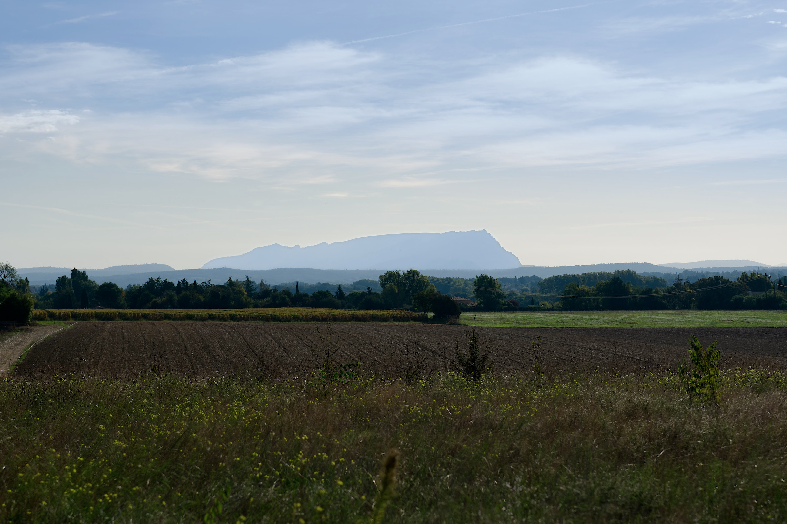
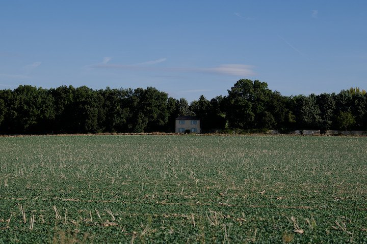
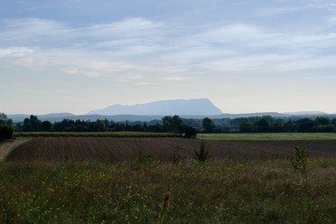
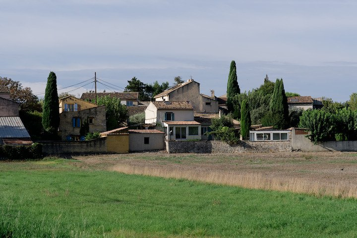
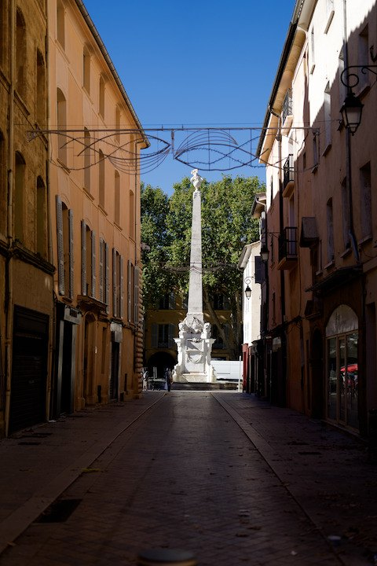
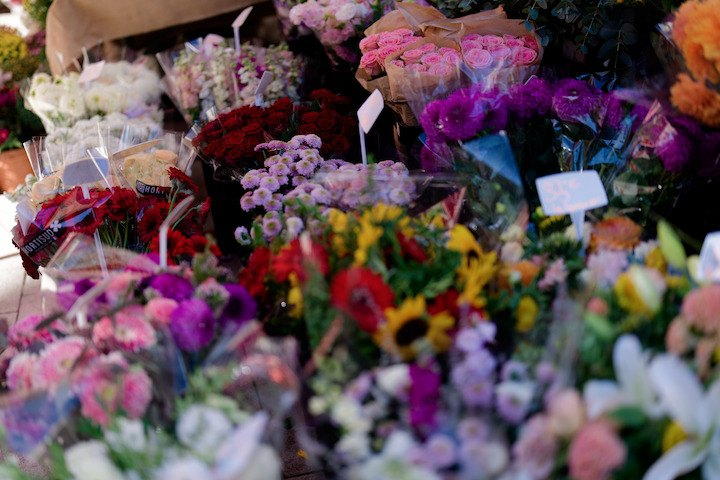
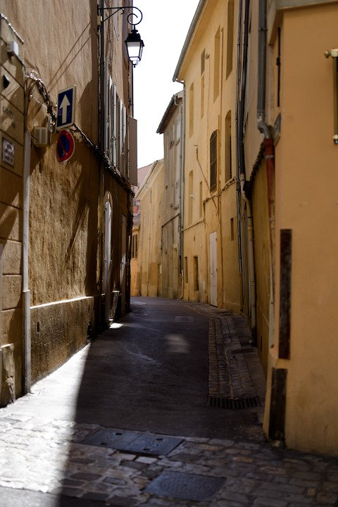

Provence
2026-10-04 · 7 photos
Before
Before and after (\)
Crop
Crop (C)
Nodes
Nodes (N)
Add photos
Add photos (⌘O)
Fit 19%
Zoom (Z toggles Fit and 100%, F full screen)
Neural · 42 ms · Display P3
Update ready
Export 3
⌘E

Signature · 100%
Sony A1 · A1M01739 · ISO 100 · 1/4000 · f/2.8






2 of 7 · 3 picked